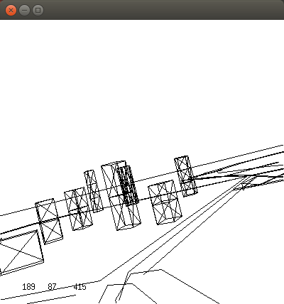
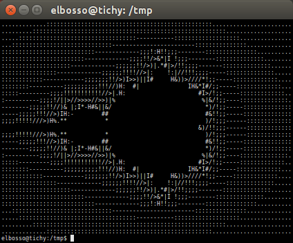

Obfuscated C Code
Nachdem ich erst neulich wieder auf ein schönes Beispiel zum Thema Obfuscated C Code gestoßen bin, habe ich mir gedacht: Im Sinne von "Archivierung funktioniert am besten verteilt" werde ich auch auf meiner Seite Links und Informationen zu dieser nur von Nerds verstandenen Kunstform verewigen.
Der Flugsimulator
Der hier abgebildete Quelltext
#include <math.h>
#include <sys/time.h>
#include <X11/Xlib.h>
#include <X11/keysym.h>
double L ,o ,P
,=dt,T,Z,D=1,d,
s[999],E,h= 8,I,
J,K,w[999],M,m,O
,n[999],j=33e-3,i=
1E3,r,t, u,v ,W,S=
74.5,l=221,X=7.26,
a,B,A=32.2,c, F,H;
int N,q, C, y,p,U;
Window z; char f[52]
; GC k; main(){ Display*e=
XOpenDisplay( 0); z=RootWindow(e,0); for (XSetForeground(e,k=XCreateGC (e,z,0,0),BlackPixel(e,0))
; scanf("%lf%lf%lf",y +n,w+y, y+s)+1; y ++); XSelectInput(e,z= XCreateSimpleWindow(e,z,0,0,400,400,
0,0,WhitePixel(e,0) ),KeyPressMask); for(XMapWindow(e,z); ; T=sin(O)){ struct timeval G={ 0,dt*1e6}
; K= cos(j); N=1e4; M+= H*; Z=D*K; F+=_*P; r=E*K; W=cos( O); m=K*W; H=K*T; O+=D*_*F/ K+d/K*E*; B=
sin(j); a=B*T*D-E*W; XClearWindow(e,z); t=T*E+ D*B*W; j+=d*_*D-_*F*E; P=W*E*B-T*D; for (o+=(I=D*W+E
T*B,E*d/K *B+v+B/K*F*D)*; pD+Z *T-a E)> K)N=1e4; else{ q=W/K 4E2+2e2; C= 2E2+4e2/ K
D; N-1E4&& XDrawLine(e ,z,k,N ,U,q,C); N=q; U=C; } ++p; } L+= (X*t +P*M+m*l); T=X*X+ l*l+M M;
XDrawString(e,z,k ,20,380,f,17); D=v/l*15; i+=(B l-M*r -X*Z)*; for(; XPending(e); u =CS!=N){
XEvent z; XNextEvent(e ,&z);
++*((N=XLookupKeysym
(&z.xkey,0))-IT?
N-LT? UP-N?& E:&
J:& u: &h); --*(
DN -N? N-DT ?N==
RT?&u: & W:&h:&J
); } m=15*F/l;
c+=(I=M/ l,l*H
+I*M+a*X)*; H
=A*r+v*X-F*l+(
E=.1+X*4.9/l,t
=T*m/32-I*T/24
)/S; K=F*M+(
h 1e4/l-(T+
E*5*T*E)/3e2
)/S-X*d-B*A;
a=2.63 /l*d;
X+=( d*l-T/S
(.19*E +a
.64+J/1e3
)-M v +A
Z)*; l +=
K ; W=d;
sprintf(f,
"%5d %3d"
"%7d",p =l
/1.7,(C=9E3+
O*57.3)%0550,(int)i); d+=T*(.45-14/l
X-a*130-J .14)*_/125e2+F*_*v; P=(T*(47
I-m 52+E*94 D-t.38+u*.21*E) /1e2+W
179*v)/2312; select(p=0,0,0,0,&G); v-=(
W*F-T*(.63*m-I.086+m*E*19-D*25-.11*u
)/107e2)*; D=cos(o); E=sin(o); } }
kompiliert mit der Kommandozeile
gcc fligth.c -DIT=XK_Page_Up -DDT=XK_Page_Down \
-DUP=XK_Up -DDN=XK_Down -DLT=XK_Left -DRT=XK_Right \
-DCS=XK_Return -Ddt=0.02 -lm -lX11 -L/usr/X11R6/lib
ergibt einen Flugsimulator - hier ein Screenshot während des simulierten Fluges in Phoenix:

Flug über Phoenix
Das Apfelmännchen
Dieser Quelltext (Quelle)
main(k){float i,j,r,x,y=-16;while(puts(""),y++<15)for(x
=0;x++<84;putchar(" .:-;!/>)|&IH%*#"[k&15]))for(i=k=r=0;
j=r*r-i*i-2+x/25,i=2*r*i+y/10,j*j+i*i<11&&k++<111;r=j);}
ergibt kompiliert und ausgeführt dieses Ergebnis:

Ein Text-ApfelmännchenLinks
The IOCCC Flight Simulator was the winning entry in the 1998 International Obfuscated C Code Contest. It is a flight simulator in under 2 kilobytes of code, complete with relatively accurate 6-degree-of-freedom dynamics, loadable wireframe scenery, and a small instrument panel.
Ein Text-Apfelmännchen
The International Obfuscated C Code Contest


Vor 5 Jahren hier im Blog
-
Zeitliche Gruppierung und Zeitreihen-Diagramme
07.10.2016
Die sQLshell hat im Laufe der letzten Wochen wieder verstärkt Aufmerksamkeit von mir bekommen - zwei neue Features wurden zum Reporting hinzugefügt.
Weiterlesen...
Tags
Android Basteln C und C++ Chaos Datenbanken Docker dWb+ ESP Wifi Garten Geo Git(lab|hub) Go GUI Hardware Java Jupyter Komponenten Links Linux Markup Music Numerik PKI-X.509-CA Python QBrowser Rants Raspi Revisited Security Software-Test sQLshell TeleGrafana Verschiedenes Video Videos Virtualisierung Windows Upcoming...
Neueste Artikel
-
 CRL next update mit Telegraf überwachen
CRL next update mit Telegraf überwachen
Nachdem ich neulich bereits darüber berichtete, wie man die Gültigkeit von Serverzertifikaten mittels Telegraf und Grafana überwachen kann habe ich mich nun eines weiteren Aspekts in diesem Zusammenhang angenommen.
Weiterlesen... -
XPra, Firefox und ein 1Gb-Arm-Rechner
Ich habe hier schon verschiedentlich über Xpra berichtet und darüber, warum ich es für eine gute Idee halte so etwas wie Gnu Screen auch für graphische Anwendungen zu haben.
Weiterlesen... -
Zertifikatsgültigkeit überwachen mit Grafana
Ich habe ausprobiert, die verbleibende Lebenszeit von X.509-Zertifikaten per Telegraf, Influx und Grafana zu überwachen
Weiterlesen...
Manche nennen es Blog, manche Web-Seite - ich schreibe hier hin und wieder über meine Erlebnisse, Rückschläge und Erleuchtungen bei meinen Hobbies.
Wer daran teilhaben und eventuell sogar davon profitieren möchte, muß damit leben, daß ich hin und wieder kleine Ausflüge in Bereiche mache, die nichts mit IT, Administration oder Softwareentwicklung zu tun haben.
Ich wünsche allen Lesern viel Spaß und hin und wieder einen kleinen AHA!-Effekt...
PS: Meine öffentlichen GitHub-Repositories findet man hier.